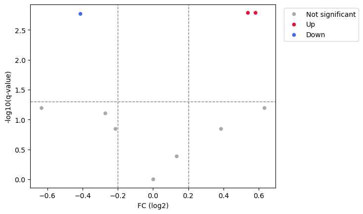
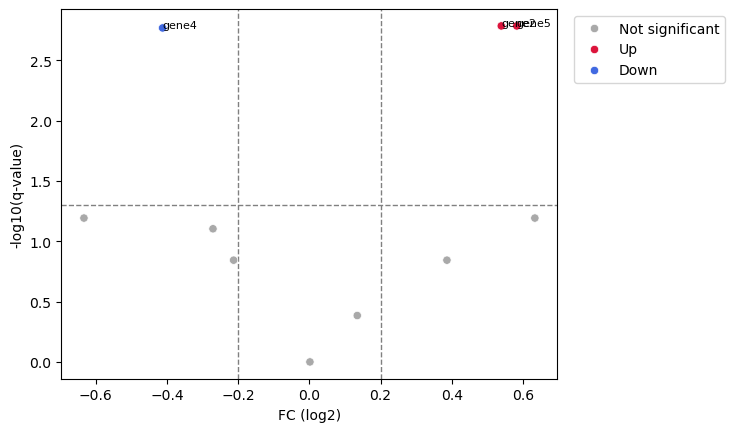

RNA-seq関連#
DESeq2解析#
PyDESeq2を使えば、PythonでDESeq2解析を行うことが可能です。
DESeq2パッケージRにもありますので、Rでも解析可能です。
PyDESeq2のインストール方法および使用方法はこちらを読んでください。
このページに記載されたDESeq2に関する情報は全て上記のサイトに記載されています。
まずはPyDESeq2から必要なパッケージをimportします。
import os
from pydeseq2.dds import DeseqDataSet
from pydeseq2.utils import load_example_data
from pydeseq2.default_inference import DefaultInference
from pydeseq2.ds import DeseqStats
---------------------------------------------------------------------------
ModuleNotFoundError Traceback (most recent call last)
<ipython-input-1-9c8f59ed7e68> in <module>
1 import os
2
----> 3 from pydeseq2.dds import DeseqDataSet
4 from pydeseq2.utils import load_example_data
5 from pydeseq2.default_inference import DefaultInference
ModuleNotFoundError: No module named 'pydeseq2'
ここではテストデータをダウンロードして使用します。
以下の方法でリードカウントとメタデータのテストデータをダウンロードします。
実際の解析では、RSEM等の解析により得られたリードカウントのデータを使用することになります。
counts_df = load_example_data(
modality="raw_counts",
dataset="synthetic",
debug=False,
)
metadata = load_example_data(
modality="metadata",
dataset="synthetic",
debug=False,
)
print(counts_df)
gene1 gene2 gene3 gene4 gene5 gene6 gene7 gene8 gene9 \
sample1 12 21 4 130 18 0 16 54 49
sample2 1 44 2 63 11 10 70 32 57
sample3 4 4 11 180 21 3 28 34 65
sample4 1 10 2 100 44 9 28 16 33
sample5 1 11 6 135 16 2 32 29 31
... ... ... ... ... ... ... ... ... ...
sample96 7 26 3 67 11 4 41 44 54
sample97 1 14 3 71 33 5 19 42 25
sample98 10 36 2 72 11 2 66 27 16
sample99 18 14 3 66 53 11 32 19 79
sample100 21 9 3 42 13 13 19 78 30
gene10
sample1 3
sample2 9
sample3 2
sample4 9
sample5 5
... ...
sample96 1
sample97 4
sample98 9
sample99 11
sample100 5
[100 rows x 10 columns]
print(metadata)
condition group
sample1 A X
sample2 A Y
sample3 A X
sample4 A Y
sample5 A X
... ... ...
sample96 B Y
sample97 B X
sample98 B Y
sample99 B X
sample100 B Y
[100 rows x 2 columns]
実データの場合は以下のようにアノテーション情報の有無やリードカウントでサンプルの絞り込みを行うことが推奨されます。
このテストデータでは不要です。
samples_to_keep = ~metadata.condition.isna()
counts_df = counts_df.loc[samples_to_keep]
metadata = metadata.loc[samples_to_keep]
genes_to_keep = counts_df.columns[counts_df.sum(axis=0) >= 10]
counts_df = counts_df[genes_to_keep]
DeseqDataSetオブジェクトを用いて、分散とlog-fold changeのパラメータを推定し、ddsに格納します。
designでメタデータのconditionを入力することで、比較する群を指定します。
inference = DefaultInference(n_cpus=8)
dds = DeseqDataSet(
counts=counts_df,
metadata=metadata,
design="~condition",
refit_cooks=True,
inference=inference,
# n_cpus=8, # n_cpus can be specified here or in the inference object
)
deseq2を使って解析を実行します。
dds.deseq2()
Using None as control genes, passed at DeseqDataSet initialization
Fitting size factors...
... done in 0.00 seconds.
Fitting dispersions...
... done in 0.02 seconds.
Fitting dispersion trend curve...
... done in 0.02 seconds.
Fitting MAP dispersions...
... done in 0.02 seconds.
Fitting LFCs...
... done in 0.01 seconds.
Calculating cook's distance...
... done in 0.01 seconds.
Replacing 0 outlier genes.
推定したパラメータにより、2群間の発現変化解析とWald検定を行います。
ds = DeseqStats(dds, contrast=["condition", "B", "A"], inference=inference)
summary()で結果を表示します。
ds.summary()
Log2 fold change & Wald test p-value: condition B vs A
baseMean log2FoldChange lfcSE stat pvalue padj
gene1 8.541317 0.632812 0.289101 2.188898 0.028604 0.064150
gene2 21.281239 0.538552 0.149963 3.591236 0.000329 0.001646
gene3 5.010123 -0.632830 0.295236 -2.143476 0.032075 0.064150
gene4 100.517961 -0.412102 0.118629 -3.473868 0.000513 0.001710
gene5 27.142450 0.582065 0.154706 3.762409 0.000168 0.001646
gene6 5.413043 0.001457 0.310311 0.004696 0.996253 0.996253
gene7 28.294023 0.134338 0.149945 0.895917 0.370297 0.411441
gene8 40.358344 -0.270656 0.136401 -1.984261 0.047227 0.078711
gene9 37.166183 -0.212715 0.133243 -1.596437 0.110391 0.143147
gene10 11.589325 0.386011 0.244588 1.578207 0.114518 0.143147
Running Wald tests...
... done in 0.02 seconds.
結果はds.results_dfに格納されています。
print(ds.results_df)
baseMean log2FoldChange lfcSE stat pvalue padj
gene1 8.541317 0.632812 0.289101 2.188898 0.028604 0.064150
gene2 21.281239 0.538552 0.149963 3.591236 0.000329 0.001646
gene3 5.010123 -0.632830 0.295236 -2.143476 0.032075 0.064150
gene4 100.517961 -0.412102 0.118629 -3.473868 0.000513 0.001710
gene5 27.142450 0.582065 0.154706 3.762409 0.000168 0.001646
gene6 5.413043 0.001457 0.310311 0.004696 0.996253 0.996253
gene7 28.294023 0.134338 0.149945 0.895917 0.370297 0.411441
gene8 40.358344 -0.270656 0.136401 -1.984261 0.047227 0.078711
gene9 37.166183 -0.212715 0.133243 -1.596437 0.110391 0.143147
gene10 11.589325 0.386011 0.244588 1.578207 0.114518 0.143147
Volcano plotの作成#
DESeq2の結果をdfに格納し、補正後p値を-log10値(score)に変換します。
import numpy as np
df = ds.results_df
df['score'] = - np.log10(df['padj'])
print(df)
baseMean log2FoldChange lfcSE stat pvalue padj \
gene1 8.541317 0.632812 0.289101 2.188898 0.028604 0.064150
gene2 21.281239 0.538552 0.149963 3.591236 0.000329 0.001646
gene3 5.010123 -0.632830 0.295236 -2.143476 0.032075 0.064150
gene4 100.517961 -0.412102 0.118629 -3.473868 0.000513 0.001710
gene5 27.142450 0.582065 0.154706 3.762409 0.000168 0.001646
gene6 5.413043 0.001457 0.310311 0.004696 0.996253 0.996253
gene7 28.294023 0.134338 0.149945 0.895917 0.370297 0.411441
gene8 40.358344 -0.270656 0.136401 -1.984261 0.047227 0.078711
gene9 37.166183 -0.212715 0.133243 -1.596437 0.110391 0.143147
gene10 11.589325 0.386011 0.244588 1.578207 0.114518 0.143147
score
gene1 1.192805
gene2 2.783685
gene3 1.192805
gene4 2.766992
gene5 2.783685
gene6 0.001630
gene7 0.385692
gene8 1.103963
gene9 0.844216
gene10 0.844216
次に、発現量変化に応じてプロットする色を指定する列を追加します。
ここではlog2値の絶対値0.2、score1.3(補正後p値0.05に相当)を基準にしていますが、示したい内容に応じて変更してください。
import numpy as np
df = ds.results_df
df['color'] = 'Not significant'
df.loc[(df['log2FoldChange'] >= 0.2) & (df['score'] >= 1.3), 'color'] = 'Up'
df.loc[(df['log2FoldChange'] <= -0.2) & (df['score'] >= 1.3), 'color'] = 'Down'
print(df)
baseMean log2FoldChange lfcSE stat pvalue padj \
gene1 8.541317 0.632812 0.289101 2.188898 0.028604 0.064150
gene2 21.281239 0.538552 0.149963 3.591236 0.000329 0.001646
gene3 5.010123 -0.632830 0.295236 -2.143476 0.032075 0.064150
gene4 100.517961 -0.412102 0.118629 -3.473868 0.000513 0.001710
gene5 27.142450 0.582065 0.154706 3.762409 0.000168 0.001646
gene6 5.413043 0.001457 0.310311 0.004696 0.996253 0.996253
gene7 28.294023 0.134338 0.149945 0.895917 0.370297 0.411441
gene8 40.358344 -0.270656 0.136401 -1.984261 0.047227 0.078711
gene9 37.166183 -0.212715 0.133243 -1.596437 0.110391 0.143147
gene10 11.589325 0.386011 0.244588 1.578207 0.114518 0.143147
score color
gene1 1.192805 Not significant
gene2 2.783685 Up
gene3 1.192805 Not significant
gene4 2.766992 Down
gene5 2.783685 Up
gene6 0.001630 Not significant
gene7 0.385692 Not significant
gene8 1.103963 Not significant
gene9 0.844216 Not significant
gene10 0.844216 Not significant
X軸にFC(log2)、Y軸に補正後p値を指定します。
import matplotlib.pyplot as plt
import seaborn as sns
fig, ax = plt.subplots()
ax = sns.scatterplot(data = df, x = 'log2FoldChange', y = 'score', hue = 'color',
hue_order = ['Not significant', 'Up', 'Down'],
palette = ['darkgrey', 'crimson', 'royalblue'])
ax.axhline(1.3, zorder = 0, c = 'grey', lw = 1, ls = '--')
ax.axvline(0.2, zorder = 0, c = 'grey', lw = 1, ls = '--')
ax.axvline(-0.2, zorder = 0, c = 'grey', lw = 1, ls = '--')
plt.legend(loc = 1, bbox_to_anchor = (1.22, 1), frameon = False, prop = {'weight': 'bold'})
ax.set_xlabel('FC (log2)')
ax.set_ylabel('-log10(q-value)')
plt.legend(loc = 'upper left', bbox_to_anchor = (1.02, 1))
<matplotlib.legend.Legend at 0x200d9b250>

有意差があるときに遺伝子名を表示させる場合はpltのtextを使って以下のようにします。
fig, ax = plt.subplots()
ax = sns.scatterplot(data = df, x = 'log2FoldChange', y = 'score', hue = 'color',
hue_order = ['Not significant', 'Up', 'Down'],
palette = ['darkgrey', 'crimson', 'royalblue'])
ax.axhline(1.3, zorder = 0, c = 'grey', lw = 1, ls = '--')
ax.axvline(0.2, zorder = 0, c = 'grey', lw = 1, ls = '--')
ax.axvline(-0.2, zorder = 0, c = 'grey', lw = 1, ls = '--')
plt.legend(loc = 1, bbox_to_anchor = (1.22, 1), frameon = False, prop = {'weight': 'bold'})
ax.set_xlabel('FC (log2)')
ax.set_ylabel('-log10(q-value)')
for i in range(len(df)):
if abs(df.iloc[i].log2FoldChange) > 0.2 and df.iloc[i].score > 1.3:
plt.text(x = df.iloc[i].log2FoldChange, y = df.iloc[i].score, s = df.iloc[i].name, fontsize = 8)
plt.legend(loc = 'upper left', bbox_to_anchor = (1.02, 1))
<matplotlib.legend.Legend at 0x200eb0050>
